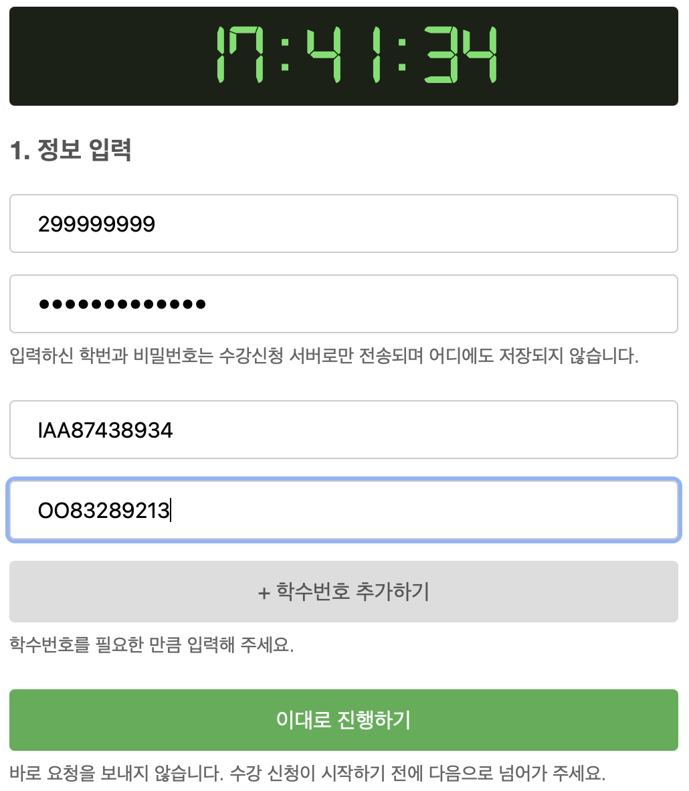
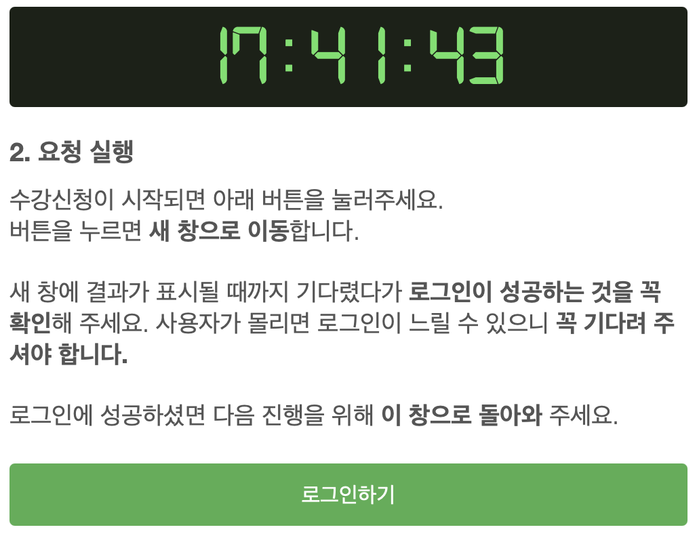
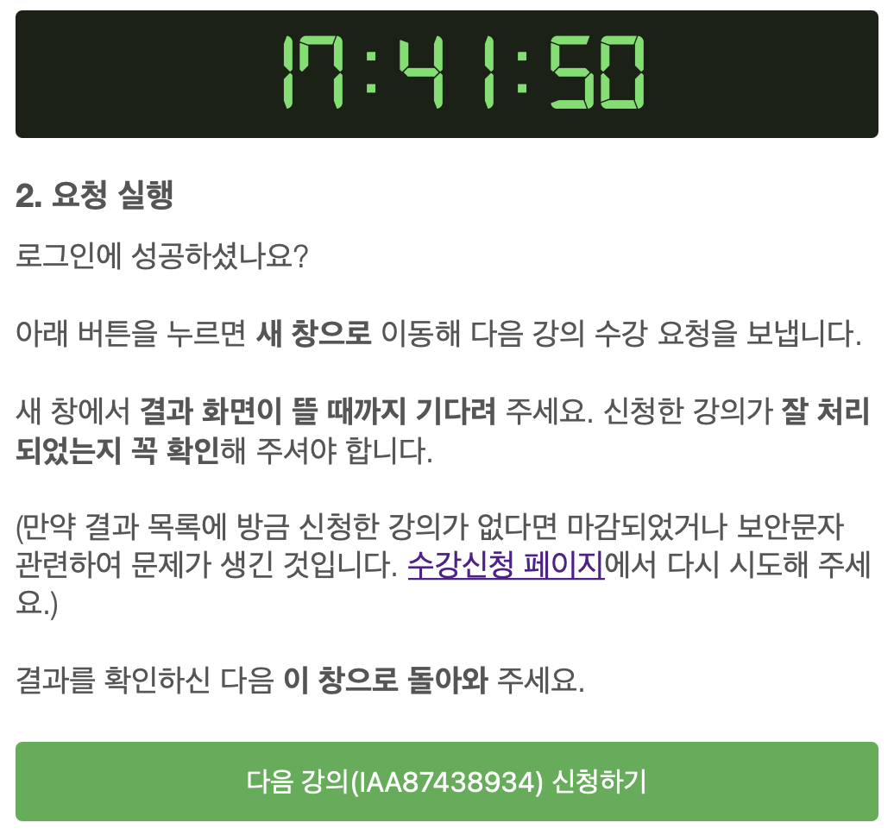
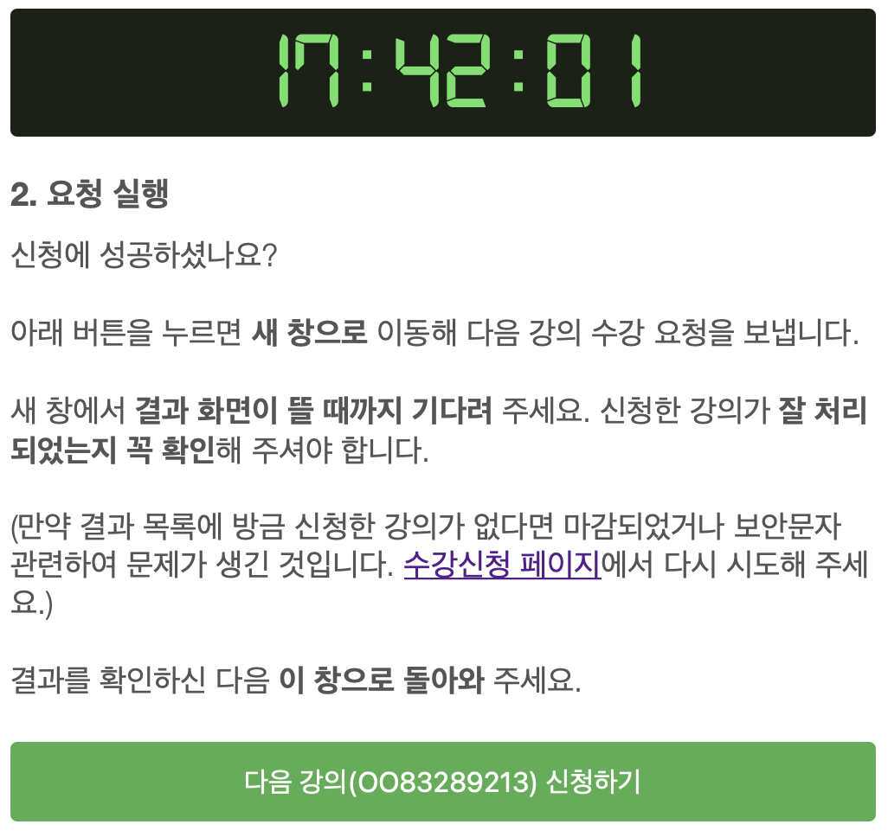
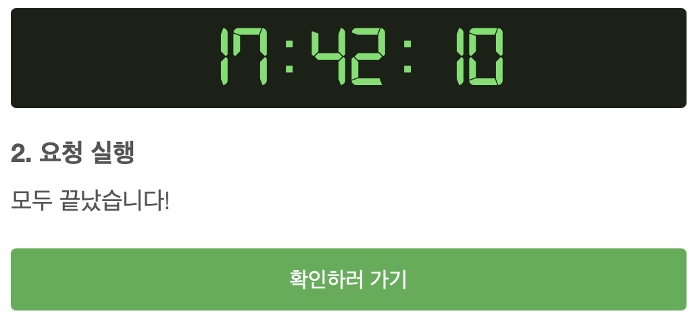

사용법
- 정보 입력 화면에서 학번과 비밀번호, 그리고 원하는 강의의 학수번호를 원하는 만큼 추가하여 기입합니다.

- 이대로 진행하기 버튼을 눌러 다음으로 넘어갑니다.
바로 요청을 보내는 것이 아닙니다. 고민하지 말고 넘어가 주시면 됩니다. 넘어간 화면은 아래와 같이 생겼습니다.

- 기다립니다. 그리고 수강신청 시작과 동시에 로그인 버튼을 누릅니다. 그러면 새 창이 열려 수강신청 페이지로 이어집니다.
이 때 아직 흰 화면이면 로그인이 완료되지 않은 것입니다. 기다려 주세요! 로그인이 된 것을 확인하셨으면 최대한 빠르게 이 페이지로 돌아와 주세요. 돌아오면 아래와 같이 바뀌어 있을 것입니다.

- 이제 본격적으로 강의 신청 요청을 보냅니다. 다음 강의 신청하기버튼을 누르면 새 창으로 이어집니다.
신청한 강의가 잘 처리되었는지 반드시 확인한 후 신속하게 이 페이지로 돌아옵니다. 돌아오면 아래와 같이 다음 요청을 위한 준비가 되어 있을 것입니다.

- 남은 강의들에 대해 버튼 누르고, 결과 보고, 돌아오기를 반복합니다. 모두 끝나면 화면이 아래처럼 바뀝니다.

주의사항
이 클라이언트는 기존의 수강신청 환경을 개선하기 위해 작성되었습니다. 공개된 API를 사용하며, NetFunnel 대기 큐를 우회하여 작동합니다.
모든 요청은 사용자의 기기에서 발생하여 교내 수강신청 서버로 직접 전달되며, 기기의 퍼포먼스와 네트워크 환경에 의해 영향을 받을 수 있습니다.
로그인과 수강신청 요청은 기존의 수강신청 사이트와 마찬가지로 실패할 수 있습니다. 겉으로 보이는 부분만 다를 뿐 기존 수강신청 사이트에서와 동일한 요청을 보내기 때문에 항상 실패에 대비해야 합니다.
이 클라이언트는 수강신청의 성공을 보장하지 않습니다. 모든 책임은 사용자에게 있습니다. 파괴적/불법적 사용은 금지됩니다.